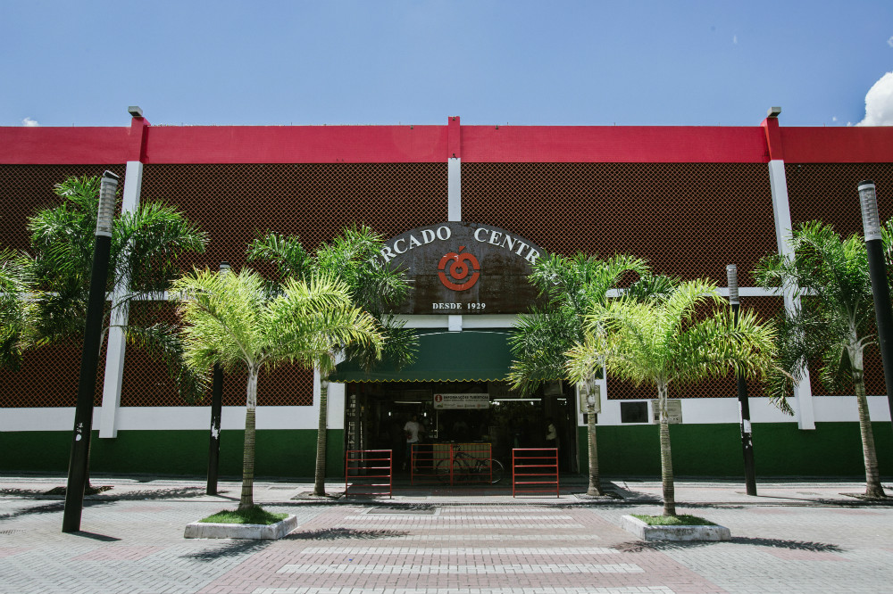
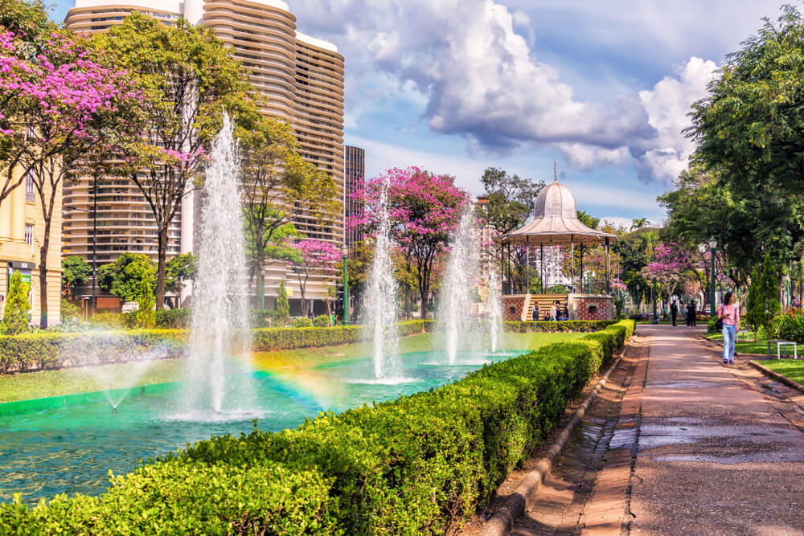
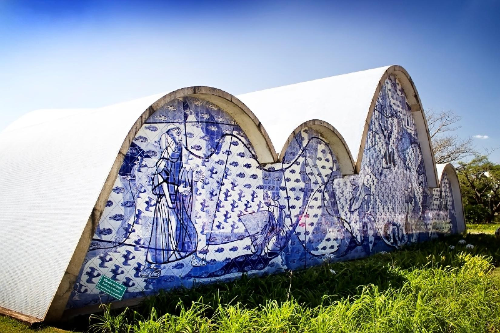
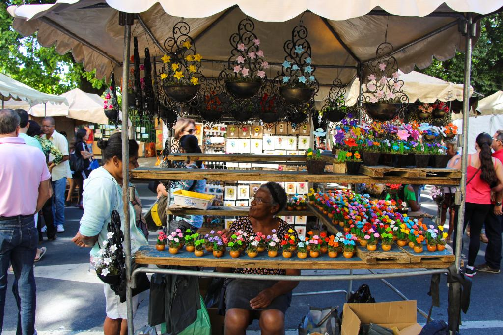

Mercado Central

Av. Augusto de Lima, 744 - Centro
Mais de 400 lojas com queijos mineiros, doces de leite, artesanatos e o tradicional fígado com jiló.
Conhecer mais...Circuito Cultural Praça da Liberdade

Av. Bias Fortes, 50 - Lourdes
O Palácio da Liberdade, o Centro Cultural Banco do Brasil (CCBB BH) e o Memorial Minas Gerais Vale. A programação em grande parte dos espaços é gratuita.
Conhecer mais...Conjunto Moderno da Pampulha

Orla da Lagoa da Pampulha
A Igreja de São Francisco de Assis, o Museu de Arte da Pampulha (MAP) e a Casa do Baile, reconhecidos como Patrimônio Mundial da UNESCO.
Conhecer mais...Feira da Afonso Pena (Feira Hippie)

Av. Afonso Pena, 1005-901 - Centro
Considerada a maior feira de artesanato ao ar livre da América Latina, ocupando a Av. Afonso Pena com roupas, calçados e comidas típicas.
Conhecer mais...